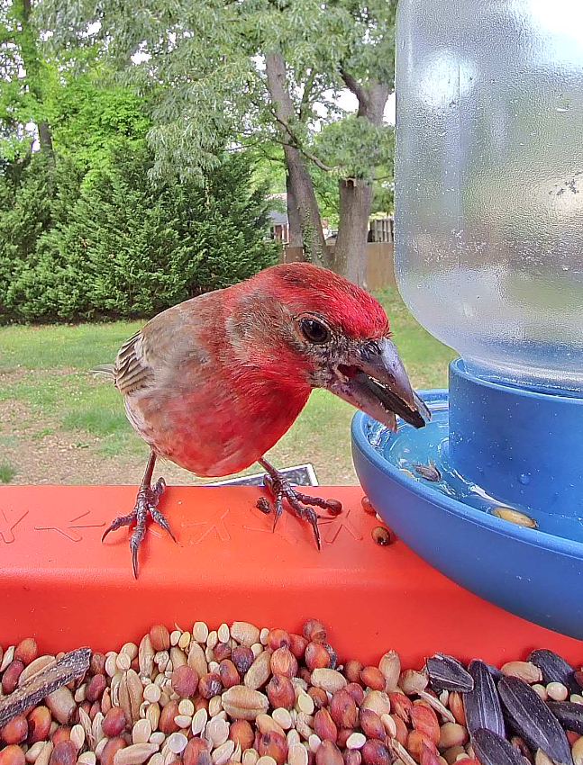
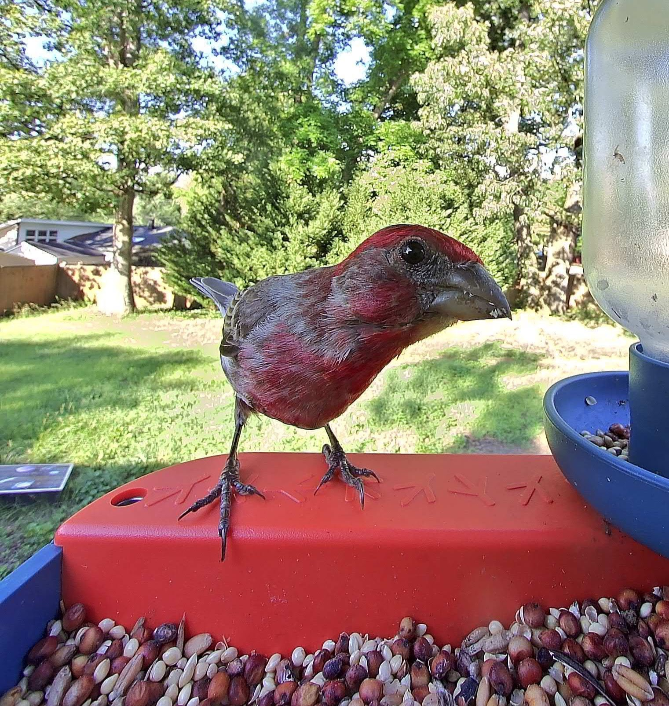

One could do much worse than Mr. Red. His bouncy flight pattern and earnest eyes make him a delight to witness. While small, he appears well-groomed and selects dense seeds for his meals. Mr. Red is not of nobility, as housefinches are commoners, but he is adaptable to any climate or situation. He has been seen evading neighborhood cats with expert precision.
